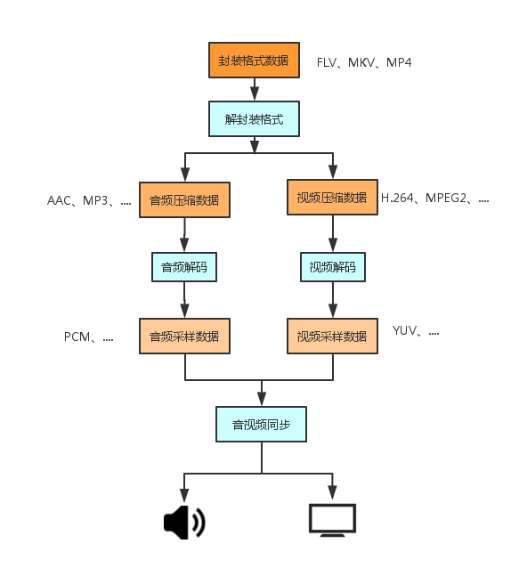

视频播放器的原理
播放一个视频文件的流程图如下：

视频像素数据
视频显示数据作用
保存了屏幕上每个像素点的像素值
格式：
常见的像素格式有 RGB24，RGB32，YUV420P，YUV422P，YUV422P，YUV444P等。压缩编码中一般使用的是YUV格式的像素数据，最常见的格式是 YUV420P
相关实验表明，人眼对亮度敏感而对色度不敏感。因而可以将亮度信息和色度信息分离，并对色度信息采用更“狠”一点的压缩方案，从而提高压缩率。
YUV 是把 RGB 数据转换了一下而已，即 RGB -> YUV
Y ：亮度数据
UV ： 色度 - 色调和饱和度数据
特点：
视频显示体积很大，一般情况下1小时高清视频RGB24格式的数据体积为：
3600 * 25 * 1920 * 1080 * 3 = 559.9 GByte
ps: 这里假定帧率为 25Hz，取样精度为8bit。
解释：
RGB24每个点的大小是3个字节，
1920 是宽，
1080 是高。
YUV 数据没有文件头信息，即没有宽，高数据。所以，一般打开 YUV 文件是播放不了的，需要自己去配置视频宽，高。
查看 YUV 视频数据工具
YUV Player
视频解码：
纯净的视频解码流程
- 压缩编码数据 -> 像素数据
- 例如解码 H.264，就是“H.264 -> YUV”
一般的视频解码流程
- 视频码流一般存储在一定的封装格式（例如 MP4、AVI 等）中。封装格式中通常还包含音频码流等。
- 对于封装格式中的视频，需要先从封装格式中提取视频码流，然后再进行解码。
- 例如解码 MKV 格式的视频文件，就是“MKV -> H.264 码流 -> YUV” 。
关于 I 帧、P 帧、B 帧
- I帧：红色，最大的一帧
- P帧：蓝色，解码的时候依赖于前面的一帧
- B帧：绿色，解码的时候不仅依赖于前面的帧也依赖于后面的帧
概述
视频压缩中，每帧代表一幅静止的图像。而在实际压缩时，会采取各种算法减少数据的容量，其中IPB就是最常见的。
简单地说，I帧是关键帧，属于帧内压缩，解码时单独的该帧便可完成解码；P帧为向前预测编码帧，即P帧解码时需要参考前面相关帧的信息才能解码；B帧为双向预测编码帧，解码时既需要参考前面已有的帧又需要参考后面待解码的帧；他们都是基于I帧来压缩数据。
I帧表示关键帧，I帧画面完整保留，解码时只需要本帧数据就可以完成（因为包含完整画面）。
P帧表示的是这一帧跟之前的一个关键帧（或P帧）的差别，解码时需要用之前缓存的画面叠加上本帧定义的差别，生成最终画面。（也就是差别帧，P帧没有完整画面数据，只有与前一帧的画面差别的数据）
B帧是双向差别帧，也就是B帧记录的是本帧与前后帧的差别，换言之，要解码B帧，不仅要取得之前的缓存画面，还要解码之后的画面，通过前后画面的与本帧数据的叠加取得最终的画面。B帧压缩率高，但是解码时CPU会比较累。
因此，I帧和P帧的解码算法比较简单，资源占用也比较少，I帧只要自己完成就行了，至于P帧，也只需要解码器把前一个画面缓存一下，遇到P帧时就使用之前缓存的画面就行。如果视频流只有I和P，解码器可以不管后面的数据，边读边解码，线性前进。如果视频流还有B帧，则需要缓存前面和当前的视频帧，待后面视频帧获得后，再解码。
I 、P、B 帧特点分析：
I 帧特点：
- 它是一个全帧压缩编码帧。它将全帧图像信息进行JPEG压缩编码及传输;
- 解码时仅用I帧的数据就可重构完整图像;
- I帧描述了图像背景和运动主体的详情;
- I帧不需要参考其他画面而生成;
- I帧是P帧和B帧的参考帧(其质量直接影响到同组中以后各帧的质量);
- I帧是帧组GOP的基础帧(第一帧),在一组中只有一个I帧;
- I帧不需要考虑运动矢量;
- I帧所占数据的信息量比较大。
P 帧特点：
- P帧是I帧后面相隔1~2帧的编码帧;
- P帧采用运动补偿的方法传送它与前面的I或P帧的差值及运动矢量(预测误差);
- 解码时必须将I帧中的预测值与预测误差求和后才能重构完整的P帧图像;
- P帧属于前向预测的帧间编码。它只参考前面最靠近它的I帧或P帧;
- P帧可以是其后面P帧的参考帧,也可以是其前后的B帧的参考帧;
- 由于P帧是参考帧,它可能造成解码错误的扩散;
- 由于是差值传送,P帧的压缩比较高。
B 帧特点：
- B帧是由前面的I或P帧和后面的P帧来进行预测的;
- B帧传送的是它与前面的I或P帧和后面的P帧之间的预测误差及运动矢量;
- B帧是双向预测编码帧;
- B帧压缩比最高,因为它只反映丙参考帧间运动主体的变化情况,预测比较准确;
- B帧不是参考帧,不会造成解码错误的扩散。